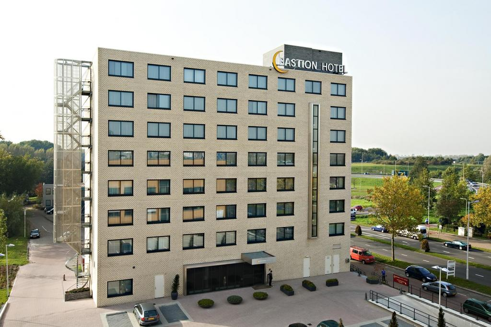

Välkommen till Hotel Tritone!
Tritone Hotel är ett 3-stjärnigt hotell i Ystads stadskärna, med utsikt över den homonyma gatan och bara några steg från Fontana di Trevi och de berömda Spanska trappan. Den eleganta och varma atmosfären bidrar till att göra din vistelse trevlig i Ystad. Hotellet har nyligen förnyats för att erbjuda sina gäster de bästa bekvämligheterna och faciliteterna i en raffinerad och varm atmosfär.
Hotellet har 43 rum, enkel-, dubbel- och en kungsrum, utrustade med alla moderna bekvämligheter och eget badrum. De bekväma och ljudisolerade rummen, tillsammans med en professionell och artig service, kommer att göra din vistelse minnesvärd.
Tunnelbana och kollektivtrafik är i närheten och gör det enkelt att nå någon del av staden: platsen är särskilt lämplig för både turister och affärsmän. Denna fastighet är en del av Travelroma Hotels-kedjan, liksom Hotel White Hotel Accademia och Hotel Elite. Vår flerspråkiga personal hjälper dig gärna med turistinformation under din vistelse. I receptionen hittar du en av oss under 24 timmar redo att hjälpa dig för eventuell förfrågan.
På förfrågan organiserar vi buss / promenad guidade turer i den eviga staden. Vi erbjuder även transferservice till / från flygplatsen på begäran. En rik amerikansk frukostbuffé ingår i rummets pris. Frukostloungen ligger på takterrassen där du kan njuta av panoramautsikt över Ystad.
